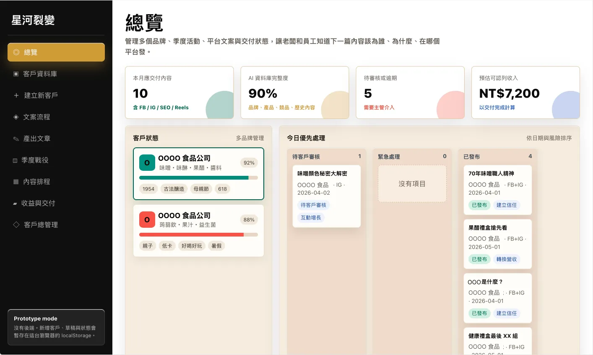

原本想文案這件事，
會直接打消我發文這件事。
AI 直接幫我解決所有困難。
原本卡在想文案，連發文都想放棄
有誒，很受用。
文案、產圖、演講稿，是這位客戶提到的用途
有阿，就是用在日常。
先設計問卷，同事填好資料，再交給 AI
回饋取自試用訪談原話，不具名呈現。
我訪談過一位做社群代操的老闆，38 歲，台中，
從代理商離職出來自己開，手上 8 個品牌、4 位外包
每個月營收 25 萬，聽起來不差
有一次他問了我一個問題，問得非常好：
「我外包都發出去了，為什麼我還是忙到半夜？
是不是我找的外包不夠好？」
我跟他說：你已經想通一半了
請外包，是把「執行」交出去。
但確認、協調和責任沒有交出去，而那些才是真正吃掉時間的東西。
多請一個外包，不是少一份工作，
是多一條要經過你的線
後來他跟我說了一句話，我覺得很到位：
「我以前以為我在管客戶，
其實我在當轉接站。」
星河裂變做的，就是把那些線接起來。
品牌資料、內容產製、排程交付、客戶數據走同一條路，
不用每一件都停在你這裡等你點頭。
付出的是外包費；留下來的，是管理外包的時間與責任
同一份品牌背景，重講給不同人
追進度、找版本、確認誰正在改
語氣、事實、產品資訊，仍由你把關
客戶不找外包，問題最後還是找你
品牌資料、內容產製、排程和交付紀錄，放進同一套流程。
外包和同事從系統拿背景、交初稿、看排程；
你把時間留給審核、策略和客戶。
你負責判斷，流程負責接力
創造公司更大的商業成長——
用更精簡的工作方式，承接更多客戶與商業價值
多品牌狀態、今日待處理、KPI 一覽——今天最急的是什麼，不用逐個群組問

記錄的不是按了幾次生成，而是從接到需求到完成交付用了多久
多品牌狀態、今日待處理與 KPI 一覽，不用再靠記憶排優先
品牌卡片、標籤與資料完整度集中管理，背景不再散在訊息、雲端與不同人的文件裡
資料上傳 → Campaign → 平台需求，一步步建好，不再接案後才發現缺素材、缺目標
集中整理客群、競品、規範與社群偏好，讓初稿先理解品牌，再開始寫
選客戶 × 平台 × 目標，產生文章架構——寫手從修改好初稿開始，不用每篇從零寫
主題戰役、時程與內容任務連在一起，接下來三個月不再每天臨時想題
跨品牌排程看板，何時交、何時發一起掌握，A 品牌不會發到 B 品牌
交付流水帳、預算分配與內容產值對照——忙完一個案，知道交了什麼、值多少
從名單、提案、合約到續約全程追蹤，不再全部放在老闆腦中
文章、任務、多品牌管理是起點；交付品質由人員與系統共同完成
| 狀態 | 功能 | 使用時怎麼配合 |
|---|---|---|
| 已完成 | 文章生成、任務管理、多品牌看板 | 品牌資料先建立，產出再審核 |
| 可協作 | 規劃輔助、報告整理、圖文排版 | 行銷人給方向；數據與排版確認 |
| 測試中 | 廣告 API、自動發文、競品分析 | 目前以人工操作及既有工具配合 |
| 需確認 | CRM、報告與 SEO 相關能力 | 演示時逐一對齊開通項目 |
新外包、新同事接手，打開客戶資料庫就有 TA、語氣與素材
選好客戶、平台和目標就有架構與初稿，力氣留給審稿
今天要交什麼、誰在做、哪個品牌還沒發，總覽和排程看板直接告訴你
交付紀錄一直都在，整理月報從核對開始，不是從找資料開始
省下的時間，來自文案、設計協調與報告整理
剩下的 51 小時，留給審核、視覺、投放與客戶關係——
你的專業，留在最重要的地方
工時為單一服務案例的分析與介入估算，實際節省以同規格工作試做驗證；不等同現金立即減少。產能為估算區間，依客戶規格而異。
內容交了很多，合約到期前，客戶還是會問：「所以有效嗎？」
客戶付費買的是完成的服務，不只是生成文章的動作。
他們需要看懂這四件事：
分列服務、素材與媒體投入，不只看到廣告花費
交付清單、主題、形式與時間，不再散在不同檔案裡
曝光、觀看與到站分開看，不混成一個數字
一項判斷，加上一項具體行動，讓下一期有方向
交付紀錄和成效說明接得起來，續約才有依據
曝光、進站與成交分開看，才能約定各自的工作
需要更完整的數據判讀？IG／FB／SEO／GEO 成效分析報告可另外加購，範圍於演示時確認
廣告案例：原簡報兩個月案例紀錄；觸及、觀看與到站不等同成交。Threads 案例：ＯＯ食品品牌 2026 Q3 社群階段執行報告，2026/08/05–09/19，11 篇正式執行＋1 篇額外贈送；部分瀏覽數為平台約數。GEO 案例：ＯＯ食品品牌官網 SEO／GEO 成效分析報告，觀察期 2026/08/05–09/09，日均依總量與天數重算；成效亦受網站技術、索引等因素影響，非系統單獨歸因。
帶一份現有品牌資料、一個真實需求，以及你原本的工作方式
建立品牌背景與內容需求。建檔時間也算入成本。
完成一份可交付內容，記錄生成＋審核＋修訂總工時
安排任務、排程與交付紀錄，看是否少了來回確認
對照原本流程：品質、時間、採用成本是否改善
也有試用客戶跟我們說：「產出有點渙散。」
所以試做時，我們會一起檢查：資料夠不夠？題目是否太散？實際審稿之後，才知道還要補哪一段。
系統承接初稿、需求整理與報告彙整，同規格服務估算可從每月 90 小時降到 51 小時。省下的時間可以承接新案的一部分，但完整的新案仍需要人力投入。建議先用一個品牌走完流程，比較總工時、修稿次數與準時交付率，穩定後再增加服務量。
把曝光、進站與成交分開看，月報回答四件事：錢花在哪裡、完成了什麼、得到什麼結果、接下來怎麼做。需要更完整的數據判讀，可以加購 IG／FB／SEO／GEO 成效分析報告。
續約需要一條客戶看得懂的證據鏈：投入、交付、成效、下一步。系統保留交付紀錄與客戶階段，合約到期前，你有紀錄可以談下一期。續約結果仍取決於服務品質與客戶需求，我們不做保證。
只要同時替多個品牌產製、審核與交付內容，工作流程就很相近。適不適合，演示時用你實際的工作流程一起確認。
相同服務規格由 90 小時降到 51 小時，理論容量約 1.76 倍；實際仍受溝通、品質與需求差異限制。建議分階段擴張：既有客戶穩定交付、你的工時沒有反彈，再往下一步。
自己組合工具，品牌背景、指令、表單、看板、合約追蹤都要自己串。星河裂變把品牌資料、內容產製、專案交付與客戶經營放在同一套流程裡。比較「從需求到完成交付」的總時間，才看得出差異。
先整理品牌、TA 與素材，再產製初稿；由人員審核，並比較修稿次數
以品牌資料與排程區分工作；試用時可以檢查品牌切換、資料引用與交付對象
不保證。內容是執行的一部分；網站技術、索引、競爭與轉換流程都會影響結果。
先選一個品牌，沿用現有資料與任務試做；建檔時間也一起算進導入成本
不預設全數替代。視覺、策略、投放與客戶關係所需的人力，仍然保留。
不用。先驗證「內容到交付」的一段流程；有改善，再擴展到其他客戶與模組。